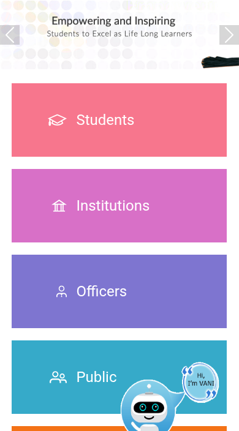
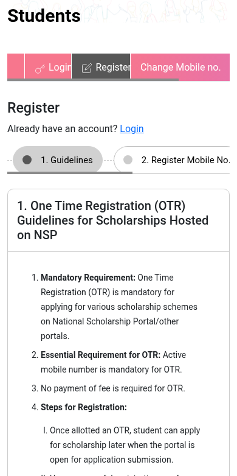

Ishan Uday Scholarship 2026-27: ₹80,000 a year for North East UG students, apply by 31 October
Scoped recheck 24 October 2026: live NSP scheme listing, linked Specifications PDF, UGC page, FAQ, Students announcement and public OTR guidelines compared. Displayed 31 October deadline and Rs80,000 annual amount unchanged. No login, consent, registration, application or award verified.
UGC's Ishan Uday scholarship supports first-year undergraduate students from the North Eastern Region. The UGC page lists ₹80,000 a year, with 10,000 fresh slots a year. Applications for 2026-27 are open on the National Scholarship Portal (NSP) until 31 October 2026.

Official publisher logo hosted by its publisher. Official source. Independent guide, not affiliated or sponsored. Artwork and trademarks belong to their owners.
What does it give?
The UGC scheme page lists financial assistance of ₹80,000 per annum. The NSP FAQ for the scheme says ₹8,000 a month for 10 months in a year. The tenure is 3 to 5 years, depending on the course. It is paid by Direct Benefit Transfer (DBT) to an Aadhaar-seeded bank account.
Who can apply?
| Domicile | Valid domicile certificate of any North Eastern state. |
|---|---|
| Education | Passed Class XII or equivalent from a school in the North Eastern Region and admitted in the first year of a regular, full-time UG degree. |
| Income | Parental income below ₹4.5 lakh a year. |
| Institute | Must be an eligible Indian institution with a valid AISHE code. The NSP-linked guidelines require valid NAAC accreditation for Section 2(f) and deemed universities, effective AY 2025-26; fully funded degree-awarding government institutions and institutions of national importance are also listed. AISHE alone is not proof of eligibility. |
| Not eligible | Open/distance/correspondence/private/part-time study, management-quota admission, or already holding a degree are excluded. Only the first regular/full-time UG degree qualifies. Other scholarship/monetary benefits must be declared; see the one-benefit caveat below. |
Key dates on NSP
| Scheme open | 16 September 2026 |
|---|---|
| Student application | Until 31 October 2026 |
| Institute verification and defective applications | Until 15 November 2026 |
| District, state or ministry verification | Until 30 November 2026 |
The scheme guidelines allow an existing scholarship recipient to apply if it is declared, but if selected the student must relinquish the other award/monetary benefit or forgo Ishan Uday. NSP's general AY2026-27 Students announcement says one merit-based plus one or more welfare-based schemes may be applied for, subject to scheme eligibility. That is not a confirmed right to receive both: the Ishan Uday one-benefit text is narrower. Ask the institute/nodal officer before accepting overlapping support.
How are awardees picked?
The NSP FAQ says selection is purely on state-wise merit among applicants. Half of the slots are for arts, humanities, social sciences, law and management. The other half are for science, engineering, medical, technical, agriculture and forestry programmes. Only verified applications are considered, and applications cannot be edited after the closing date.
How to apply on NSP: step by step
Checked on the live National Scholarship Portal on 19 October 2026. NSP now uses One Time Registration (OTR) - do this first if you have never registered.
- Open the official NSP Students page, then use its OTR registration/login link and Register. OTR has no fee. The public link opened the registration guidelines in this check; no personal registration was attempted.
- Read the OTR guidelines, tick the consent boxes and click Next. Register your active mobile number and verify it with the OTP; a reference number is sent to your mobile.
- Complete the public OTR steps only after reviewing consent. The page describes an active mobile/OTP reference, NSP OTR and Aadhaar Face RD Android apps, then face authentication. Aadhaar is required, but an unassigned Aadhaar can use its Enrolment ID (EID); the guidelines also describe parent/legal-guardian Aadhaar for minors without Aadhaar. One OTR per student; OTR generation alone is not a scholarship application.
- Log in on NSP with your OTR ID, open Fresh Application for Academic Year 2026-27 and choose the Ishan Uday Special Scholarship Scheme from the scheme list.
- Fill the application carefully and submit before 31 October 2026. The current scheme Specifications say students need not upload certificates/affidavits to NSP; submit the required domicile, income and other evidence to your institution for verification. The institution uploads its verification certificate. Follow any current dashboard instructions and ask the institute if they differ; we did not inspect a logged-in application.
- Submit before 31 October 2026. Track the application in the same dashboard; institute and district/state verification happen after you submit.


Steps 4-6 happen inside your own NSP login, so they are not shown as screenshots. Generating an OTR alone is not an application - you must still log in and submit the scholarship application.
Video guides
We searched YouTube on 19 October 2026 for a step-by-step application video for this scheme on the current NSP OTR portal in English and in Malayalam. The videos we found cover older portal versions or could not be verified to match the current portal, so we are not linking any rather than risk outdated or unrelated instructions.
A careful checklist
- Check that you have a North East domicile certificate and your family income proof.
- Generate your OTR on scholarships.gov.in using Aadhaar or Aadhaar Enrolment ID (EID).
- Apply under Ishan Uday Special Scholarship Scheme and submit before 31 October 2026.
- Ask your institute to verify the application before 15 November 2026.
We did not log in or apply. We read the NSP scheme list, the UGC scheme page and the NSP FAQ. An older UGC guideline PDF shows monthly rates of ₹5,400 and ₹7,800, which differ from the current ₹80,000 a year on the UGC page. The current UGC scheme page and NSP FAQ agree on ₹80,000 a year; this guide follows those pages. Recheck the scheme details on NSP before submitting.
Renewal is not automatic: apply each year after successful progression, maintain attendance and conduct, and obtain institute verification. The linked guidelines say failure to be promoted, or changing course/institution, forfeits the scholarship. Institutions retain supporting records during the scholarship and at least two years afterward. Wrong or misleading information can trigger recovery of the full scholarship with interest.
Frequently asked questions
Is there a renewal?
Yes. The scholarship renews for the next year after you complete the first year, but you must apply for renewal on NSP.
Can I apply with an integrated course?
Yes, but the scholarship is paid for the UG component only.
Sources: NSP scheme list, UGC scheme page, NSP FAQ. Checked 9 October 2026; application steps and video search re-checked 19 October 2026. This is an AiCoN explainer, not a government publication. · Current NSP-linked Specifications · NSP Students announcement · Public OTR guidelines